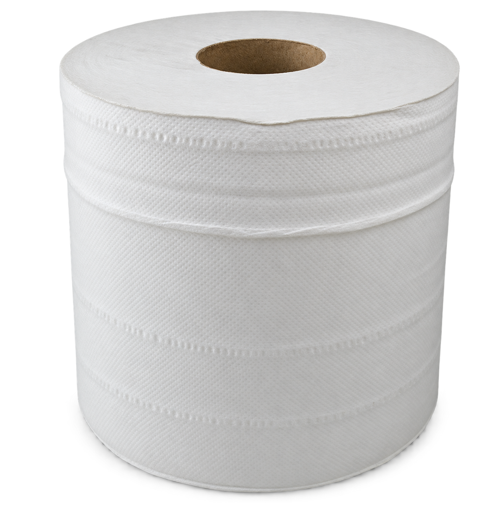
Pro-Active · WhiteCentrefeed
Centrefeed
Wipers
White flat-sheet and embossed options across the 50m, 100m, 150m and 300m range.
For business
High-performance tissue and wiping solutions for washrooms, workplaces, hospitality, health and industry.


Made for the working day
Our professional range is organised around the needs of people at work: washroom supply, hand hygiene, kitchen use and industrial cleaning.
Centrefeed and workshop wipers in white and blue, flat-sheet and embossed formats. Options run from 50m to 360m for everyday clean-up, workshop and food-service use.
18 variations View catalogue ↗ 02100% pure bulk pack, mini jumbo, jumbo and micro toilet tissue for dependable washroom supply.
13 variations View catalogue ↗ 03Z-fold and V-fold hand towels in blue, white and green for well-stocked hygiene points.
4 variations View catalogue ↗ 04Blue and white hygiene rolls, with 250mm and 500mm widths for practical clean-up routines.
4 variations View catalogue ↗ 05Luxury Soft, Ultra Soft and 320-sheet toilet tissue options in professional case formats.
3 variations View catalogue ↗ 06100% pure multi-purpose kitchen towel for professional kitchens and day-to-day clean-up.
1 variation View catalogue ↗Professional collection
Explore the currently available visual range. Product-family imagery is used where final SKU pack shots are still being prepared.

White flat-sheet and embossed options across the 50m, 100m, 150m and 300m range.
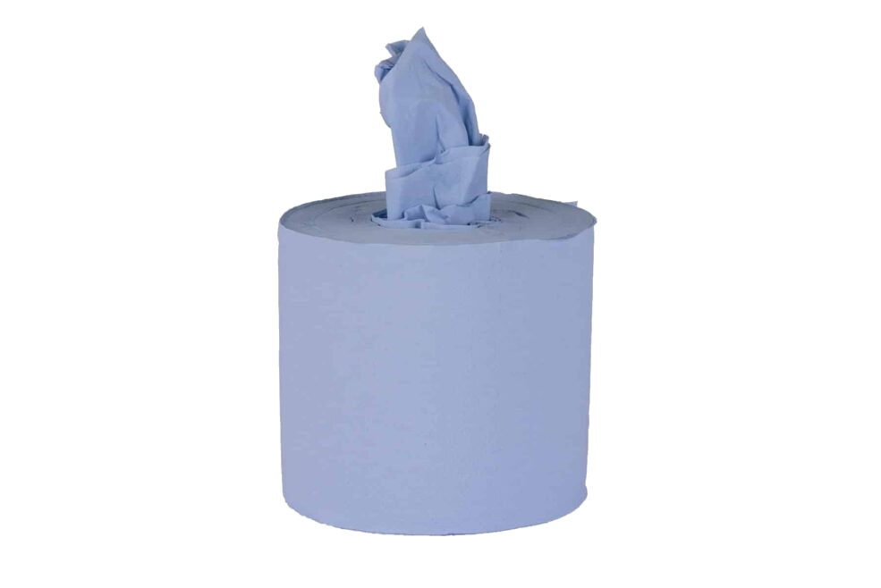
Blue flat-sheet and embossed rolls for practical clean-up and food-service use.
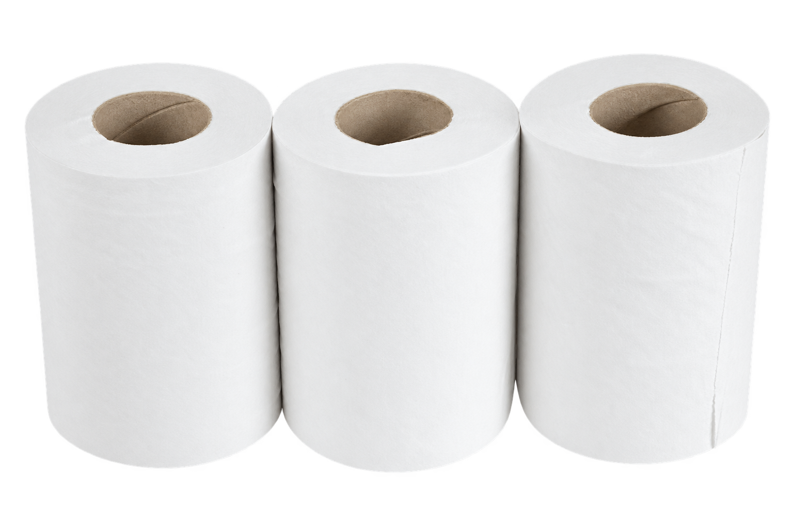
Compact 60m and 120m white centrefeed formats for smaller dispensers.
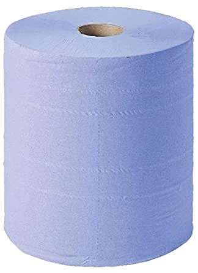
Blue industrial wiper roll for workshop and task-led cleaning routines.
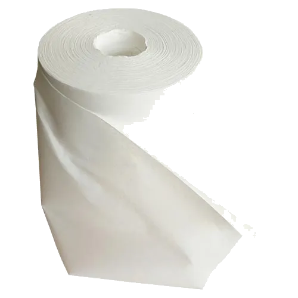
White industrial wiper roll for dependable everyday clean-up.

100% pure bulk-pack toilet tissue for dependable washroom supply.

60mm and 76mm core options in 150m and 200m roll lengths.

300m and 400m formats with 60mm or 76mm core options.

Compact 80 and 125 sheet toilet tissue for space-conscious washrooms.
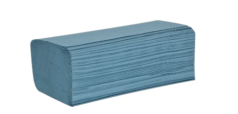
Blue single-ply folded hand towels for busy hygiene points.
White two-ply folded towels for a more premium hand-drying finish.

Blue single-ply folded towel format for efficient refill routines.
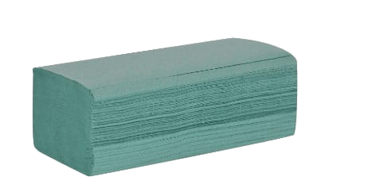
Green single-ply folded towel format for clear washroom differentiation.
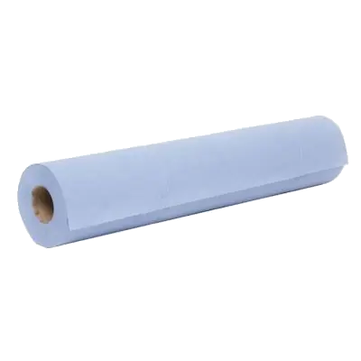
250mm and 500mm blue hygiene roll formats for practical clean-up.
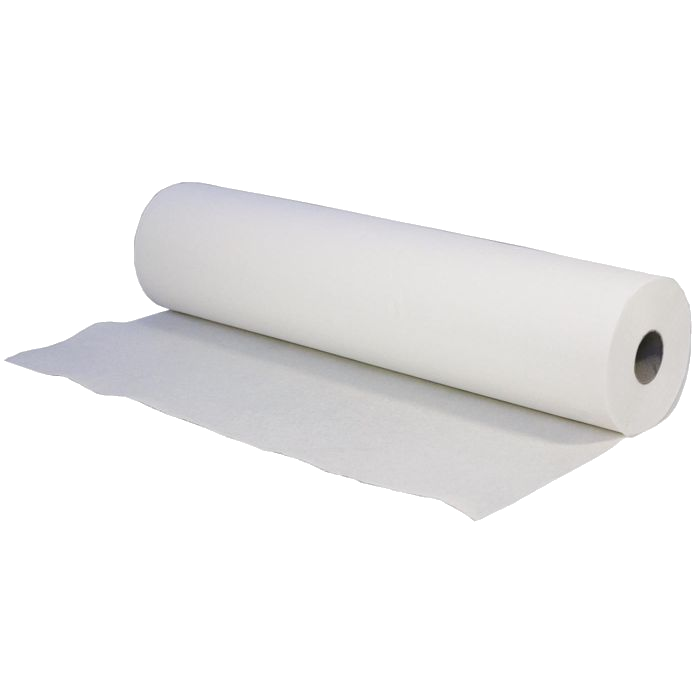
250mm and 500mm white hygiene roll formats for everyday use.
2-ply professional toilet tissue in a 4 × 10 case format.
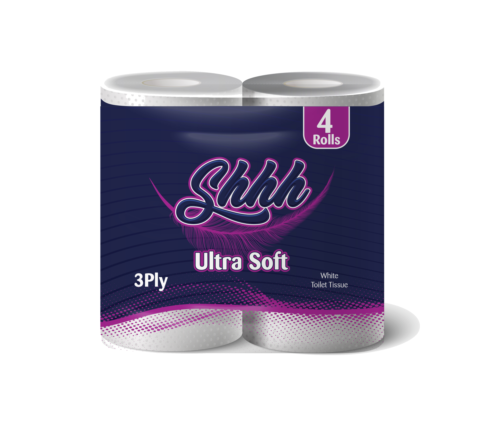
3-ply professional toilet tissue in a 4 × 10 case format.
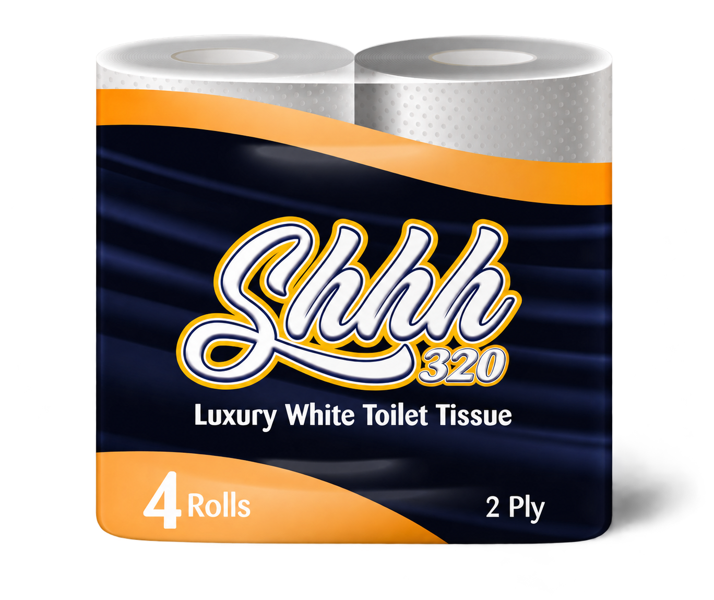
2-ply tissue with 320 sheets, supplied in a 4 × 9 case format.
100% pure multi-purpose kitchen towel for professional use.
Product specification